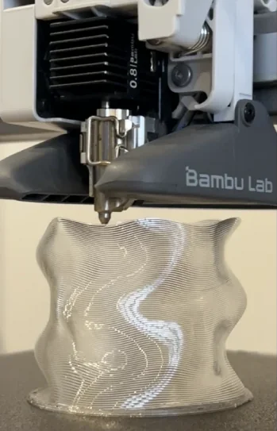
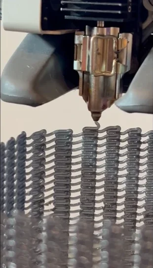
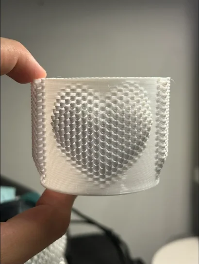
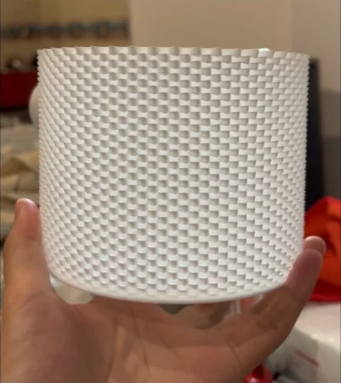
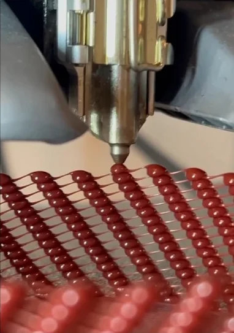

Vase Mode Por enquanto é só para vase mode: uma parede contínua em espiral, da base até a borda. O modo com preenchimento chega numa próxima versão.
O sn_non-planar gera o G-code da sua peça sem sair do Blender, pronto para imprimir. Superfícies mais suaves, peças mais fortes e formas que um slicer comum não consegue fazer.
Seja um dos primeiros a testar.
12/12 – 12:12
Sábado, 12 de dezembro, 12h12 (horário de Brasília)
Já saiu!
Escolha um caminho e veja a peça se formar. No planar o bico sobe aos saltos; com o sn_non-planar ele se move em X, Y e Z ao mesmo tempo.





Um slicer pega a sua peça e decide sozinho como preenchê-la com camadas.
No sn_non-planar é o contrário: a linha que o bico faz é o design. Você escolhe o padrão, o ritmo e a altura de cada onda, e é exatamente isso que é impresso.
Se você vende vasos, luminárias ou decoração, tem um acabamento que nenhum slicer faz. Esse é o seu diferencial.
Você decide como a superfície fica com critérios de design: ritmo, amplitude, abertura. Sem brigar com centenas de opções para sair "mais ou menos".
Os presets vêm de peças impressas de verdade, não da teoria. E quando algo sai bem, você salva como seu.
Não é um slicer genérico: não foi pensado para peças mecânicas nem para fatiar qualquer STL. É uma ferramenta para desenhar o caminho.
O mesmo perfil, cortado de duas formas: à esquerda camadas planas, à direita camadas que vão se inclinando até copiar a borda.
Cada camada é um plano. As curvas são aproximadas com degraus (em vermelho, o material que falta ou sobra).
As camadas se inclinam do piso até a borda: o bico sobe e desce enquanto avança e a superfície copia a forma.
As camadas seguem a curva da peça. Tchau, efeito escada nas áreas curvas e inclinadas.
Com camadas onduladas, uma trinca já não encontra um plano reto por onde correr: tem que seguir um caminho mais longo, que cruza a carga.
Esquema ilustrativo.
Você gera o caminho e vê ele mudar em tempo real enquanto ajusta. Vê a peça como vai ser impressa e o caminho exato do bico da sua impressora.
Você modela, gera o caminho e visualiza no mesmo arquivo.
Exporta com 1 clique! Pronto para imprimir.
Se você tem uma Bambu Lab, o add-on lê sua impressora direto do Bambu Studio: você escolhe o modelo, o bico e o filamento que já usa.
Se você tem outra marca, carregue um G-code que já tenha fatiado no seu slicer e o add-on tira dele a sua impressora.
Testado e impresso na A1 mini e nas de bico duplo (H2D, H2D Pro, X2D, H2C), que imprimem com só um dos seus bicos.
Exemplo com a A1 mini: em 3 eixos o bico não se inclina, então antes de exportar o add-on compara cada ponto do caminho com o volume do cabeçote.
O bico sobe e desce enquanto percorre a parede. Texturas que não existem em camadas planas.
Fios que se cruzam e deixam células abertas de verdade, para vasos e cúpulas de luminária, ou qualquer peça sua.
Faixas inclinadas que seguem um padrão desenhado ou uma curva sua.
Olá, formas orgânicas que são impossíveis no slicer.
Colunas de gotas de plástico, uma sobre a outra. Um acabamento que parece feito à mão. Muito único!
Cada cartão mostra a parede desenrolada, de frente, ou o caminho visto de cima. O ponto laranja é o bico na última camada.
Todas as camadas com a mesma onda: relevo sólido. Seno, triângulo ou trapézio.
Cada fileira vai meia onda adiantada: só se tocam nos nós e a parede fica vazada.
A onda gira camada a camada: hélices ou chevrons que sobem pela parede.
Faixas com base plana e onda em cima; a faixa seguinte se apoia nas cristas.
Colunas de gotas empilhadas, unidas por um fio fino. A extrusora nunca para.
Uma imagem ou um ruído decide onde a onda cresce e onde a parede fica lisa.
A linha entra e sai do contorno, alternando a cada volta: trama tipo cesto.
Duas paredes em um mesmo traço; as cristas de uma ficam entre as da outra.
Mexa nos controles: a parede é recalculada e a checagem diz se dá para imprimir. São as regras que o add-on usa antes de exportar, simplificadas, com os limites da A1 mini.
Você também pode importar um STL ou qualquer arquivo 3D do seu programa favorito.
Veja no viewport antes de imprimir. Tudo em tempo real!
1 clique e você manda para a sua impressora.
E pronto! É só imprimir :)
Sou o Seba Numata, artista 3D e de VFX. Uso o Blender há mais de 5 anos para fazer praticamente qualquer coisa que você imaginar.
Sempre gostei de experimentar no mundo paramétrico/procedural e orgânico, aproveitando todas as ferramentas poderosas que o Blender nos oferece.
O sn_non-planar abre novos métodos de impressão 3D, formas que nenhum slicer consegue. De um jeito muito simples, exportando o G-Code rapidinho direto do Blender.
Sem spam. Sou o Seba (não uma IA) e vou te mandar e-mails escritos por mim com as novidades do projeto e um passo a passo de como avançar.
Ao se inscrever, você aceita receber e-mails sobre o sn_non-planar e que seu e-mail seja guardado no Google (EUA). Você pode cancelar quando quiser. Política de privacidade